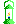
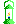
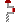
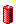
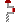
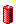
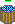

Vítejte v Minerovi! :)
Je jedno, co jste dìlali doteï. Nyní se stáváte horníkem. Budete dolovat, hledat,
odstøelovat, vrtat, lámat, rozbíjet, tìžit a prodávat. Budete zavaleni, zatopeni, vybouchnete,
napíchnete se na kaktus, snad i chytíte syfilis. Budete se léèit a urèitì i zemøete. Párkrát.
A možná se i oženíte.
Mùžete zamìstnat Ukrajince, kteøí leccos z toho udìlají za vás, ale
skýtá to i jistá rizika - však poznáte.
Vaši finanèní jistotu pøedstavuje The Community Capital Bank.
Ta jistota spoèívá v tom, že u nich máte již od zaèátku jistý dluh 100 Kè.
Pokud by se vám to náhodou zdálo málo, zadlužte se více, ovšem s rostoucí
výší vašeho dluhu klesá ochota CCB do vás investovat. Pokud ovšem prokážete
schopnost váš dluh zužitkovat tím, že budete mít velký obrat, CCB ráda pùjèí ještì více.
Materiální zásobování naší osady obstarává Sergej Ivanov, zapøísáhlý komunista.
Pùvodnì vlastnil øetìzec obchodù na Floridì a nìkolik set nemovitostí v Karlových Varech,
pro svoje ultralevicové názory byl však odklizen Nixonovou vládou sem na Aljašku.
Nakoupené zboží nemá neomezenou životnost, a po urèité dobì používání se opotøebují.
I kdyby používáno nebylo, mùže podlehnout zkáze èasem - døevo trouchniví, dynamit zvlhne atd.
Každého zboží mùžete nakoupit více kusù.
Pod povrch se dostanete výhradnì dùlní šachtou ve výtahu vlastnìném bankou CCB.
Ta investovala do dùlní vìže a výtahu, ovšem hloubka šachty není nijak závratná, a délka lana
je ještì menší. Pokud pocítíte potøebu dostat se hloubìji pomocí výtahu místo procházení dolu pìšky,
je zde možnost výmìny lana za delší a prohloubení šachty, obojí je ovšem finanènì velice nároèné
a dovolit si ho mohou obvykle pouze nejúspìšnìjší horníci.
V dole je pochopitelnì naprostá tma, a tak pokud se tam vydáte bez jakéhokoliv zdroje
svìtla, nejen že jste tam prakticky zbyteènì, ale také jste vystaveni velikému nebezpeèí úrazu èi smrti.
Èím lepší budete mít zdroj, tím snadnìji poznáte, co se okolo vás v dole ukrývá. Pozor ovšem na èas -
každé svìtlo jednou zhasne. Berte jich s sebou radìji víc.
Ovládání hry je popsáno níže v sekci "Ovládání".
Vítejte v osadì Dreamer's Creek a pøeji hodnì úspìchù!
(Vaše pøípadné úspìchy CCB odesílá pøes internet na server spoleènosti
Dynawest. Banka ovšem nemá
vlastní pøipojení, proto pokud budete chtít o svých úspìších dát vìdet svìtu,
pøipojte se prosím pøed odesláním k internetu a CCB použije vaši linku.)
Zakladatel, majitel, starosta
a správce osady Dreamer's Creek
skoroBc. Ondøej Žižka
Historie hry
Miner VGA JavaScript version je remake hry z roku 1990 od Harrella W. Stillese.
Zaèal jsem ho psát nìkdy v roce 1998, jenže tehdejší poèítaèe nápor JavaScriptu prostì
nezvládly. Vzdal jsem marné snahy, a napsaný kód zmizel v propadlišti dìjin spolu s
rozbitou zipkou. Myšlenka však døímala dál.
Pozdìji, v roce 2002, kdy i já mìl Pentium 4, a kdy se mùže Explorer smìle vrhnout
na zpracovávání desítek obrázkù a tísícù øádkù kódu JavaScriptu, jsem myšlenku oprášil a jal se
vše dìlat znova. Práce šla docela rychle, jak dosvìdèí moji betatesteøi (viz titulky dole) a
zanedlouho bylo hotovo. Pravda, ještì stále bylo co dodìlávat a opravovat, ale o tom dále.
No a nyní, v roce 2004, jsem na JÈU ve tøetím roèníku a Minera jsem si zvolil jako
svou bakaláøskou práci. Èasy se mírnì zmìnily: Z prohlížeèe Mozilla se stal vinikající prohlížeè
se skoro bezchybnou implementací HTML, CSS, a JavaScriptu a DOM, já jsem si koupil knihu o JavaScriptu
a hodnì se z ní nauèil a JavaScript jsem poznal do hloubky. Tak jsem zjistil, že to není prostý jazyk
k jednoduchému skriptování pomocí funkcí, a proto jsem zaèal Minera pøepisovat do striktnì objektové podoby.
Ovládání
Hra se ovládá pomocí klávesnice. Pohyb panáèka ovládejte šipkami.
Pokud používáte Microsoft Internet Explorer, pak zaprvé vám ho doporuèuji opustit
a nainstalovat si Mozillu
èi Firefox,
a zadruhé musíte používat pouze šipky na numerické klávesnici se zapnutým Num-Lockem!
Maèkejte tedy šipky (nebo v MSIE 4,6,2,8) pro pohyb,
nulou nebo T se otoèíte a
pìtkou, E nebo entrem vstupujete do budov.
Z jakékoliv budovy se dostanete stiskem X.
Dynamit se odpaluje D,
pumpu použijete P,
lopatu L,
krumpáè K,
vrták V,
sbíjeèku S,
kbelík G
a pumpu P.
Dále, pokud se projeví (jakože asi jo) chyba MSIE a rozhodí se souøadnice (horník bude o pùl buòky jinde),
maèknìte klávesu pod Esc. Ano, støedník, tildu, apostrof, nebo co tam je všechno za bordel. A pak znovu.
To by mìlo skoro najistotu všechno srovnat a uèesat.
Pokud chcete hru uložit, musíte se nejprve dostat na povrch a tam stisknìte Shift + S (velké S).
Nahrávat mùžete kdykoliv odkudkoliv stiskem Shift + L (velké L).
Tuto obrazovku dostanete také pomocí klávesy F1.
Co je nového?
No tak to je relativní. Podle toho, co jste naposled vidìli :) Ale asi si toho všimnete
sami. Takže z tìch dùkležitìjších vìcí:
f) Kromì toho, že je celá hra vevnitø úplnì pøepsaná, což navenek moc nepoznáte,
mùžete nyní používat dynamit. Dostanete ho u Sergeje za
, odpálíte ho stiskem 'D'.
e) Ukládání! Save & Load! Prostì už mùžete pokraèovat tam,
kde jste naposled uznali, že jste na tom dobøe. Ale pozor - jde to jen na povrchu.
a) Za tìžbu a výtah se teï platí, takže se vyplatí poøádnej prùzkum.
b) Funguje obchod. Nevim jestli to má bejt Tony nebo Sergej.
Zatim Sergej, èasem možná pøibyde konkurence :)
c) Pøibyl tenhle helpscreen, najdete ho taky v infobaráèku.
d) Drobné zmìny a opravy najdete v
work.txt.
Indžoj! :)
Pøedmìty
  
|
Zdroje svìtla jako louè nebo lampa umožòují práci
v temných dolech. Kvalitnìjší osvìtlení zvyšuje šance na objevení nerostù. |
   
|
Odedávna líné lidstvo si vždy vymýšlelo nástroje, které by jim zajistily více èasu na lelkování.
Tak se stalo, že ani horníci se nehrabou v zemi rukama, ale mají lopaty, dláta, krumpáèe.
Jistì, jsou drahé, ale ve výsledku tìžbu zefektivní. |

 |
Nìkdy se stane, že jediná cesta na povrch je zákeønì odøíznuta vodou.
Pokud se nejedná o proudy z pramene, je možné vodu pøeèerpat jinam. |